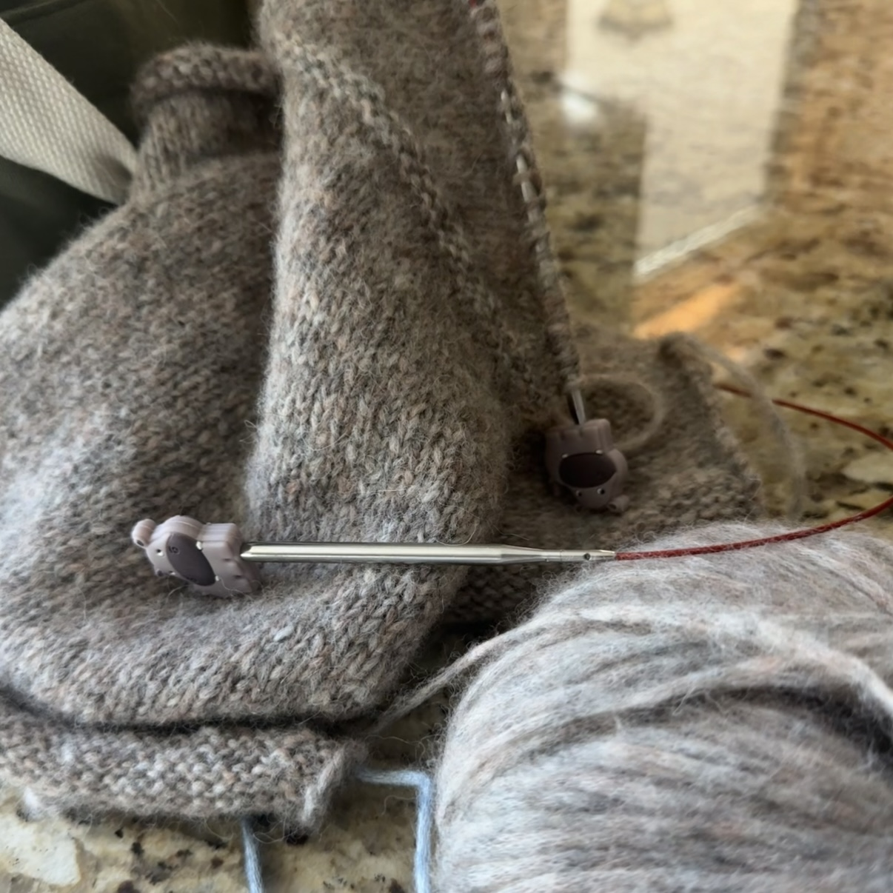

<!DOCTYPE html>
<html lang="en">
  <head>
    <meta charset="UTF-8" />
    <meta name="viewport" content="width=device-width, initial-scale=1.0" />
    <title>Whisker Knits</title>
    <!-- Meta tags for SEO -->
    <meta name="description" content="Whisker Knits: WIP, Projects I'm Working on Now">
    <meta name="keywords" content="knitting, knitting blog, cozy crafts, WIPs, projects, cats">
    <meta name="author" content="Nora Hobbs">
    <link rel="preconnect" href="https://fonts.googleapis.com">
    <link rel="preconnect" href="https://fonts.gstatic.com" crossorigin>
    <link href="https://fonts.googleapis.com/css2?family=Bodoni+Moda:ital,opsz,wght@0,6..96,400..900;1,6..96,400..900&display=swap" rel="stylesheet">
    <link rel="stylesheet" href="https://cdn.jsdelivr.net/npm/picnic">
    <link rel="stylesheet" href="https://cdnjs.cloudflare.com/ajax/libs/font-awesome/7.0.1/css/all.min.css" crossorigin="anonymous">
    <link href="https://fonts.googleapis.com/css2?family=Averia+Serif+Libre:ital,wght@0,300;0,400;0,700;1,300;1,400;1,700&family=Crimson+Text:ital,wght@0,400;0,600;0,700;1,400;1,600;1,700&family=Lora:ital,wght@0,400..700;1,400..700&display=swap" rel="stylesheet">
    <link rel="stylesheet" href="css/wip.css" />
  </head>
</html>


    <nav class="demo">
        <a href="#" class="brand">
            <span><i class="fa-solid fa-cat"></i> Whisker Knits</span>
        </a>
        <input id="bmenub" type="checkbox" class="show">
        <label for="bmenub" class="burger pseudo button"><i class="fa-solid fa-bars"></i></label>
        <div class="menu">
            <a href="index.html" class="button icon-puzzle">Home</a>
            <a href="complete.html" class="button icon-puzzle">Completed Projects</a> 
            <a href="notes.html" class="button icon-puzzle">Nora’s Notes</a> 
            <a href="https://www.ravelry.com/people/norahobbs03" class="button icon-puzzle">My Ravelry</a>
        </div>
    </nav>


    <div class="wip-page">
        
        <header class="page-header">
        <h1 class="notes-title">Works in Progress</h1>
            <p class="notes-subtitle">
                projects currently on my needles, and what I’m learning along the way ✿
            </p>
        </header>

        <div class="wip-layout">
            <aside class="wip-sidebar">
                <h2>Project Details</h2>
                <div class="sidebar-section">
                    <h3>Pattern:</h3>
                    <a class="links" href="https://www.petiteknit.com/en/products/cloud-sweater">Cloud Sweater →</a>
                </div>
                <div class="sidebar-section">
                    <h3>Yarn:</h3>
                    <a class="links" href="https://www.garnstudio.com/yarn.php?show=drops-air&cid=17">Garnsstudio DROPS Air →</a>
                    <p>Colorway: 26 Beige</p>
                </div>
                <div class="sidebar-section">
                    <h3>Needles:</h3>
                    <a class="links" href="https://www.chiaogoo.com/interchangeable/?&SingleProduct=10">Chiaogoo Lace Tips →</a>
                    <p>US 8 / 5mm</p>
                </div>
                <div class="sidebar-section">
                    <h3>Videos that Helped Me Out:</h3>
                    <a class="links" href="https://www.tiktok.com/t/ZTrCEeNRJ/">Advice for Working the Shoulders →</a>
                </div>
            </aside>
            <main class="wip-content">
                <h1>Thoughts Along the Way: Sweater</h1>
                <p>November 22nd-29th: I casted on this project after taking a bit of a break from knitting due to
                being in my last semester at school. But...I am excited to do this and seeing the progress so far has been nice.
                This is only my second sweater project, my first being, of course, the Step by Step Sweater. Again, I like
                this yarn (not as much as the Sirdar)! And I am glad I picked this color, thank you mom for the suggestion!
                I have taken a bit of a pause on working on this project because I am trying to get all of my Christmas knitting done
                in time! Two more little projects, then I'll get back to this sweater. In my week of working on this, I got the back panel and 
                shoudlers done, and am now working on the front panel. 
                </p>
                
            </main>
        </div>
    </div>

        

    <footer>Whisker Knits by Nora and Binns</footer>

